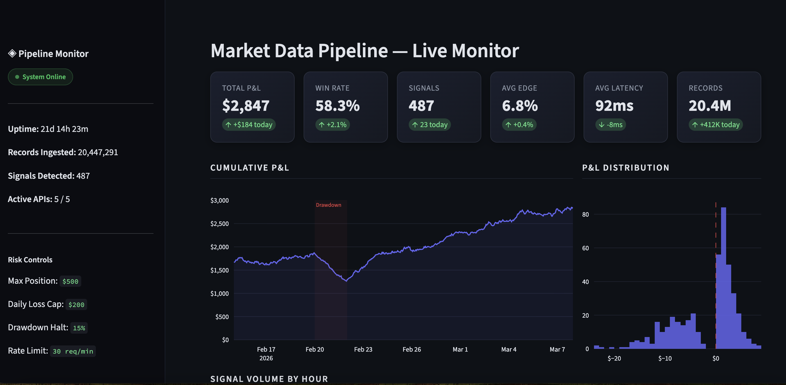
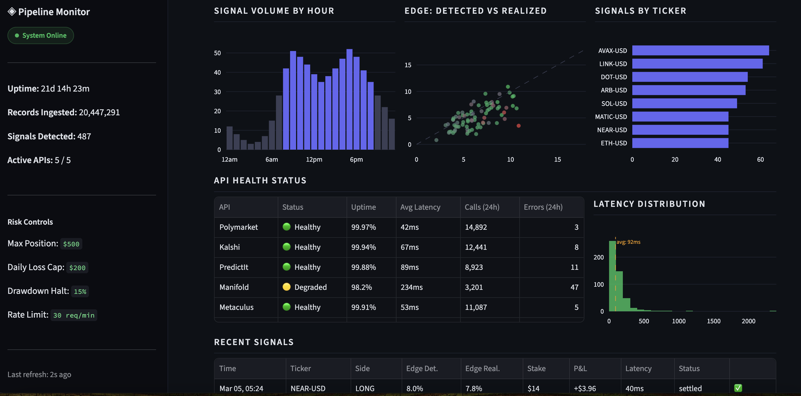

Case Study
Real-Time Market Data Pipeline & Monitoring Platform
Built a production data aggregation platform that polls 5+ financial data APIs in real time, processes 20M+ data points, and surfaces actionable signals through automated detection and a live monitoring dashboard.
The Problem
Needed to continuously collect and cross-reference data from multiple market data providers, detect time-sensitive patterns, and present findings through a unified interface — all running autonomously 24/7.
What I Built
- Async data pipeline — concurrent polling of 5+ APIs every 15-90 seconds using httpx with exponential backoff, rate limiting, and retry logic
- Storage layer — SQLite with 5 normalized tables, snapshot deduplication, decimal-precision numerics
- Signal detection engine — configurable threshold-based opportunity detection across multiple data dimensions
- Risk management system — circuit breakers, position limits, drawdown halts, daily loss caps
- Live dashboard — Streamlit app with real-time metrics, historical charts, and system health monitoring
- Production deployment — DigitalOcean droplet, systemd services, SCP-based deployment
Results & Quality
- 20M+ records ingested and processed
- 293 automated tests (pytest), strict mypy, ruff linting
- System ran autonomously in production for weeks
- Sub-second signal detection latency
Live Dashboard

